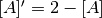

2. How to Build a Model¶
Model is composed of a set of Species and ReactionRules.
Speciesdescribes a molecule entitie (e.g. a type or state of a protein) in the model.Speciesalso has its attributes like the size.ReactionRuledescribes the interactions betweenSpecies(e.g. binding and unbinding).
%matplotlib inline
from ecell4 import *
2.1. Species¶
Species can be generated with its name:
sp1 = Species("A")
print(sp1.serial())
A
A name of Species (called serial) has a number of naming rules.
It requires attention to use special symbols (e.g. parenthesis (),
dot ., underbar _), numbers and brank.
Species has a set of APIs for handling its attributes:
sp1.set_attribute("radius", "0.005")
sp1.set_attribute("D", "1")
sp1.set_attribute("location", "cytoplasm")
print(sp1.get_attribute("radius"))
sp1.remove_attribute("radius")
print(sp1.has_attribute("radius"))
0.005
False
The arguments in set_attribute is the name of attribute and its
value. Both of them have to be string. There is a shortcut to set the
attributes above at once because radius, D (a diffusion
coefficient) and location are frequently used.
sp1 = Species("A", "0.005", "1", "cytoplasm") # serial, radius, D, location
The equality between Species is just evaluated based on their
serial:
print(Species("A") == Species("B"), Species("A") == Species("A"))
(False, True)
A Species consists of one or more UnitSpecies:
sp1 = Species()
usp1 = UnitSpecies("C")
print(usp1.serial())
sp1.add_unit(usp1)
sp1.add_unit(UnitSpecies("A"))
sp1.add_unit(UnitSpecies("B"))
print(sp1.serial(), sp1.num_units())
C
(u'C.A.B', 3)
A Species can be reproduced from a serial. In a serial, all serials of
UnitSpecies are joined with the separator, dot .. The comparison
between Species matters the oder of UnitSpecies in each Species.
sp1 = Species("C.A.B")
print(sp1.serial())
print(Species("A.B.C") == Species("C.A.B"))
print(Species("A.B.C") == Species("A.B.C"))
C.A.B
False
True
UnitSpecies can have sites. Sites consists of a name, state
and bond, and are sorted automatically in UnitSpecies. name
must be unique in a UnitSpecies. All the value have to be string. Do
not include parenthesis, dot and blank, and not start from numbers
except for bond.
usp1 = UnitSpecies("A")
usp1.add_site("us", "u", "")
usp1.add_site("ps", "p", "_")
usp1.add_site("bs", "", "_")
print(usp1.serial())
A(bs^_,ps=p^_,us=u)
UnitSpecies can be also reproduced from its serial. Please be
careful with the order of sites where a site with a state must be placed
after sites with no state specification:
usp1 = UnitSpecies()
usp1.deserialize("A(bs^_, us=u, ps=p^_)")
print(usp1.serial())
A(bs^_,ps=p^_,us=u)
Of course, a site of UnitSpecies is available even in Species‘
serial.
sp1 = Species("A(bs^1, ps=u).A(bs, ps=p^1)")
print(sp1.serial())
print(sp1.num_units())
A(bs^1,ps=u).A(bs,ps=p^1)
2
The information (UnitSpecies and its site) is used for
rule-based modeling. The way of rule-based modeling in E-Cell4 will be
explained in 7. Introduction of Rule-based
Modeling.
2.2. ReactionRule¶
ReactionRule consists of reactants, products and k.
reactants and products are a list of Species, and k is a
kinetic rate given as a floating number.
rr1 = ReactionRule()
rr1.add_reactant(Species("A"))
rr1.add_reactant(Species("B"))
rr1.add_product(Species("C"))
rr1.set_k(1.0)
Here is a binding reaction from A and B to C. In this
reaction definition, you don’t need to set attributes to Species.
This is equivalent to call an utility function as follows:
create_binding_reaction_rule(Species("A"), Species("B"), Species("C"), 1.0).
To inspect ReactionRule, as_string function is available:
rr1 = create_binding_reaction_rule(Species("A"), Species("B"), Species("C"), 1.0)
print(rr1.as_string())
A+B>C|1
You can also provide components to the constructor:
rr1 = ReactionRule([Species("A"), Species("B")], [Species("C")], 1.0)
print(rr1.as_string())
A+B>C|1
In general, ReactionRule suggests a mass action reaction with rate
k. ode solver also supports rate laws thought it’s under
development yet. ode.ODERatelaw is explained in 6. How to Solve
ODEs with Rate Law
Functions.
2.3. NetworkModel¶
Now you have known how to create components of Model. Next let’s
register these components to Model.
sp1 = Species("A", "0.005", "1")
sp2 = Species("B", "0.005", "1")
sp3 = Species("C", "0.01", "0.5")
rr1 = create_binding_reaction_rule(Species("A"), Species("B"), Species("C"), 0.01)
rr2 = create_unbinding_reaction_rule(Species("C"), Species("A"), Species("B"), 0.3)
NetworkModel has interfaces to register Species and
ReactionRule named add_species_attribute and
add_reaction_rule.
m1 = NetworkModel()
m1.add_species_attribute(sp1)
m1.add_species_attribute(sp2)
m1.add_species_attribute(sp3)
m1.add_reaction_rule(rr1)
m1.add_reaction_rule(rr2)
Here is a simple model with binding and unbinding reactions. To inspect
Model, species_attributes and reaction_rules is available:
print([sp.serial() for sp in m1.species_attributes()])
print([rr.as_string() for rr in m1.reaction_rules()])
[u'A', u'B', u'C']
[u'A+B>C|0.01', u'C>A+B|0.3']
Species‘ attributes in Model are indispensable for spatial
simulations, but not necessarily needed for non-spatial algorithms, i.e.
gillespie and ode. The attribute pushed first has higher
priority than one pushed later. You can also attribute a Species
based on the attributes in a Model.
sp1 = Species("A")
print(sp1.has_attribute("radius"))
sp2 = m1.apply_species_attributes(sp1)
print(sp2.has_attribute("radius"))
print(sp2.get_attribute("radius"))
False
True
0.005
All functions related to Species, ReactionRule and
NetworkModel above are available even on C++ in the same way.
You can solve this model with run_simulation as explained in 1.
Brief Tour of E-Cell4
Simulations:
run_simulation(10.0, model=m1, y0={'C': 60})
2.4. Python Utilities to Build a Model¶
As shown in 1. Brief Tour of E-Cell4
Simulations,
E-Cell4 also provides the easier way to build a model using with
statement:
with species_attributes():
A | B | {'radius': '0.005', 'D': '1'}
C | {'radius': '0.01', 'D': '0.5'}
with reaction_rules():
A + B == C | (0.01, 0.3)
m1 = get_model()
For reversible reactions, <> is also available instead of == on
Python 2, but deprecated on Python3. In the with statement,
undeclared variables are automaticaly assumed to be a Species. Any
Python variables, functions and statement are available even in the
with block.
from math import log
ka, kd, kf = 0.01, 0.3, 0.1
tau = 10.0
with reaction_rules():
E0 + S == ES | (ka, kd)
if tau > 0:
ES > E1 + P | kf
E1 > E0 | log(2) / tau
else:
ES > E0 + P | kf
m1 = get_model()
del ka, kd, kf, tau
Meanwhile, once some variable is declared even outside the block, you
can not use its name as a Species as follows:
A = 10
try:
with reaction_rules():
A + B == C | (0.01, 0.3)
except Exception, e:
print(repr(e))
del A
RuntimeError('invalid expression; "10" given',)
where A + B == C exactly means 10 + B == C.
In the absence of left or right hand side of ReactionRule like
synthesis or degradation, you may want to describe like:
with reaction_rules():
A > | 1.0 # XXX: will raise SyntaxError
> A | 1.0 # XXX: will raise SyntaxError
However, they are not accepted because of SyntaxError on Python. To
describe these cases, a special operator, tilde ~, is available.
~ sets a stoichiometric coefficient of the following Species as
zero, which means the Species is just ignored in the
ReactionRule.
with reaction_rules():
~A > A | 2.0 # equivalent to `create_synthesis_reaction_rule`
A > ~A | 1.0 # equivalent to `create_degradation_reaction_rule`
m1 = get_model()
print([rr.as_string() for rr in m1.reaction_rules()])
[u'>A|2', u'A>|1']
The following Species‘ name is not necessarily needed to be the same
as others. The model above describes :
from math import exp
run_simulation(10.0, model=m1, opt_args=['-', lambda t: 2.0 * (1 - exp(-t)), '--'])
A chain of serial reactions can be described in one line. To split a line into two or more physical lines, wrap lines in a parenthesis:
with reaction_rules():
(E + S == ES | (0.5, 1.0)
> E + P | 1.5)
m1 = get_model()
print([rr.as_string() for rr in m1.reaction_rules()])
[u'E+S>ES|0.5', u'ES>E+S|1', u'ES>E+P|1.5']
The method uses global variables in ecell4.util.decorator (e.g.
REACTION_RULES) to cache objects created in the with statement:
import ecell4.util.decorator
with reaction_rules():
A + B == C | (0.01, 0.3)
print(ecell4.util.decorator.REACTION_RULES) #XXX: Only for debugging
get_model()
print(ecell4.util.decorator.REACTION_RULES) #XXX: Only for debugging
[<ecell4.core.ReactionRule object at 0x10d77bab0>, <ecell4.core.ReactionRule object at 0x111edf588>]
[]
For the modularity in building Model, decorator functions are also
usefull.
@species_attributes
def attrgen1(radius, D):
A | B | {'radius': str(radius), 'D': str(D)}
C | {'radius': str(radius * 2), 'D': str(D * 0.5)}
@reaction_rules
def rrgen1(kon, koff):
A + B == C | (kon, koff)
attrs1 = attrgen1(0.005, 1)
rrs1 = rrgen1(0.01, 0.3)
print(attrs1)
print(rrs1)
[<ecell4.core.Species object at 0x10d77b7f8>, <ecell4.core.Species object at 0x10d77be88>, <ecell4.core.Species object at 0x10d77bab0>]
[<ecell4.core.ReactionRule object at 0x111edff00>, <ecell4.core.ReactionRule object at 0x111edfe40>]
Do not add parenthesis after decorators in contrast to the case of
the with statement. The functions decorated by reaction_rules
and species_attributes return a list of ReactionRules and
Species respectively. The list can be registered to Model at
once by using add_reaction_rules and add_species_attributes.
m1 = NetworkModel()
m1.add_species_attributes(attrs1)
m1.add_reaction_rules(rrs1)
print(m1.num_reaction_rules())
2
This method is modular and reusable relative to the way using with
statement.